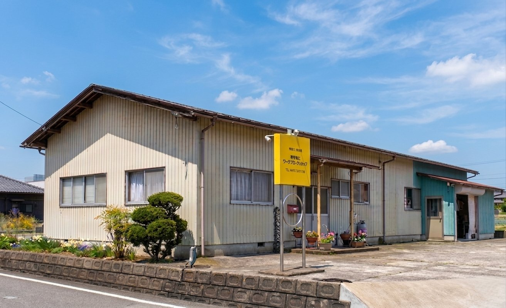

デザイン・企画提案
チラシ、ポスター、パンフレット、名刺、封筒、カレンダー、クリアファイルなど各種印刷物のデザイン制作・企画提案
㈲ワープロセンターホープ
当社は、越前市を中心とした地域の皆さまに支えられ、40年以上にわたり印刷サービスを提供してまいりました。
地域密着型の印刷会社として、お客様とのつながりを大切にし、企画・デザインから印刷・製本・加工・納品まで一貫してきめ細やかな対応を心がけています。
学校広報誌・PTA新聞・公民館だより・会報誌などの冊子制作をはじめ、チラシ・ポスター・パンフレットなどの印刷物も幅広く承っております。自費出版や記念誌制作など、原稿整理・編集作業からのご相談にも対応しております。
顔が見える関係を大切にし、「いつものあの印刷屋さん」と思っていただける存在を目指しています。

デザインから納品まで、一貫してお任せください
チラシ、ポスター、パンフレット、名刺、封筒、カレンダー、クリアファイルなど各種印刷物のデザイン制作・企画提案
オフセット印刷・オンデマンド印刷による高品質な印刷物の制作。小ロットから大量部数まで対応します。
PTA広報誌、学校新聞、会報誌、自費出版、記念誌などの冊子制作。原稿整理・編集作業からご相談ください。
折り加工・断裁・中綴じ・ミシン目加工など各種仕上げ加工。丁寧な仕上がりをお届けします。
オリジナルカレンダー、クリアファイルなど企業や団体の記念品・配布用印刷物の制作
印刷物の梱包から発送まで、丁寧かつスムーズに対応。ご指定の場所へお届けします。
| 会社名 | 有限会社ワープロセンターホープ |
|---|---|
| 代表者 | 取締役社長 柏谷 敏晴 |
| 所在地 | 〒915-0847 福井県越前市東千福町21-4 |
| 電話番号 | 0778-24-1146 |
| FAX番号 | 0778-24-2339 |
| メール | hope01@galaxy.ocn.ne.jp |
| 主な業務 | 冊子制作・自費出版・学校広報誌・チラシ・ポスター・パンフレット・名刺・各種印刷全般 |
| 営業時間 | 月曜日〜金曜日 9:00〜17:00（土日祝 休業） |
※ 地図が正しく表示されない場合は、住所でご検索ください。
お気軽にご連絡ください。